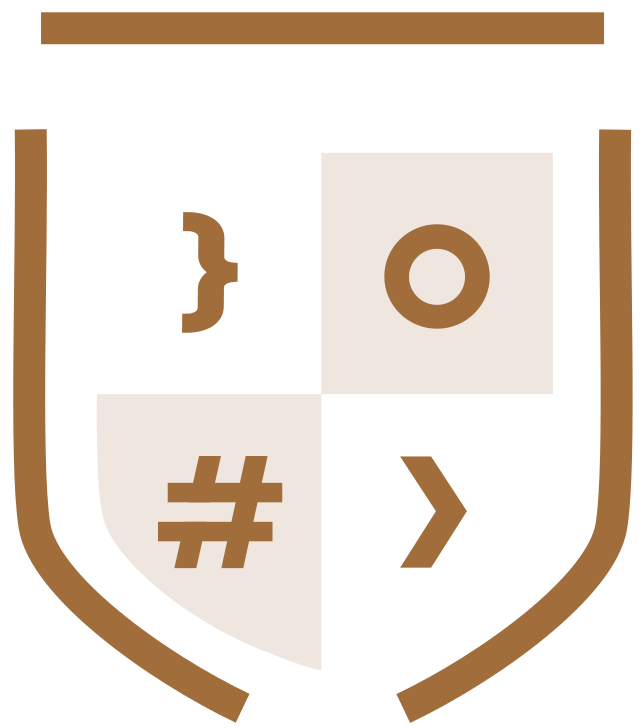

Вчимо працювати з AI так, щоб він вирішував реальні задачі: у роботі, у власній справі, у творчості.
Поєднуємо освіту й експертний досвід. Вчать практики, які самі щодня працюють з AI.
 AI академія
AI академія AI академія
AI академія